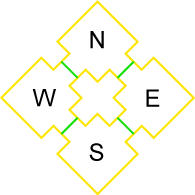

Zoning
Zoning is the dividing of a map into several distinct areas called zones. It is one of several Map Optimization techniques: put simply, the engine renders only the zones that the player can see. In versions of the Unreal Engine prior to UT2003, zoning also allowed physical effects such as water, gravity, etc: see Zoning (UT). These are now made with volumes. In summary, zones are used for:
- Optimizing the map to improve performance.
- Naming areas of the map for team gametype info displays (e.g. "Blue base", "Red base").
- Special effects (in older versions of the engine - this is now done with volumes).
- Set lighting for a large area with Zonelight. Note that this usually doesn't look good.
Making Zones
This is accomplished by flagging certain BSP surfaces to be zone portals: these mark the limit between zones. Zones are defined when the build process runs, and identifies areas which are separate. In practice, most zone portals are made as sheet brushes and added with the Add Special button. But more advanced users can set the flags in the Surface Properties themselves.
- two unconnected spaces are different zones (eg two separate subtracted cubes)
- two spaces which are completely divided by zone portals are different zones.
If you don't get different zones where you think you should, you have a leak! Check you have portals everywhere and that they cover properly.
Seeing Zones
To show the different zones in UnrealEd, click the Zone/Portal icon (#11 in the screenshot below) on the UnrealEd Viewport title bar. The surfaces of different zones will be drawn using different colors instead of showing the textures. Use this function to ensure that a zone doesn't leak.
![[interface-Ed3-viewportbar]](images/interface-ed3-viewportbar.png) Viewport Title Bar: Icon 11 - Zone/Portal View |
Defining Zone Properties
Zone properties are defined by a ZoneInfo actor (or one of its subclasses). Zones don't need one of these: without one, a zone will simple have default properties. To set the properties of a zone:
- Add an Actor >> Info >> ZoneInfo
- Set its properties as you wish
- Rebuild
If you want the SkyBox to be visible, then they do need a ZoneInfo.
You can change the actor's properties later without rebuilding, but rebuilding is necessary so UnrealEd "notices" the ZoneInfo belongs with the zone.
How Zones Optimize
By using a number of zone portals to separate areas of the map into air-tight chunks, whole sections of the map can be tested for "visibility" simply by processing the zone portals that enclose the area.
If no part of the zone portal(s) sealing an area of the map are visible then the entire area cannot be seen. This means that that area of the map need not be processed. This lets the engine quickly throw out everything inside that zone.
Conversely, if any part of the zone portal is visible then the parts of the zone that are visible through the geometry of the brush(es) creating the zone portal(s) into that zone will be visible. For this reason it is best to place zone portals separate areas of the map in the corridors that join the map areas. In particular, if you have a hallway between two rooms, it is beneficial to place zone portal on either end of that hallway so that the room on the other side can be thrown out from many view angles. This works because from anywhere but straight on the portal on the other end of the hallway isn't visible through the portal on the near end. It is also important to make portals as small as possible while still sealing the zone because it is the source geometry of the portal sheets that is used for determining visibility of objects and other zone portals inside the zone.
As a general rule of thumb zone portals used in this manner should be visible from as few angles as possible. Essentially, the less you can see these zone portals the better. However, the only way to limit what angles the zone portal is visible from in UT2003 are to place additional zone portals or anti-portals in front of it.
Example

A very simple map. |
Above is the top view of a simple map. We have four rooms, connected by corridors. The green lines are zone portals, so we have four zones.
When the player is in the North room, she can't see any of South. So that room simply isn't rendered. But she might be able to see some of East or West, depending on how she faces. So the engine looks at how much of the portal she sees, and works out which bits of the E and W zones are visible through the portals.
In other words, out of four zones:
N – we're in it
S – not rendered
E, W – partially rendered.
Another Example
Here's a map that shows how the size of the portal affects view culling:
![[zoning_portalsizematters]](images/zoning-portalsizematters.jpeg) The same geometry with different portals, in the editor and in-game. |
The top picture is an overhead view of the map, you can see that in the left room the portal extends across the whole width of the room, where as in the right image it only fills the doorway. The middle is again the editor, this time with the zone color overlaid to show that the zones are infact being created. Bottom is in-game shots from the exact same position relative to the rooms, showing how the zones in the left room do nothing, while the zones in the right room cull to their bounds.
Related Topics
External Reference
See this basic reference for Zone Technique: [Unreal Zones by Tim Sweeney]